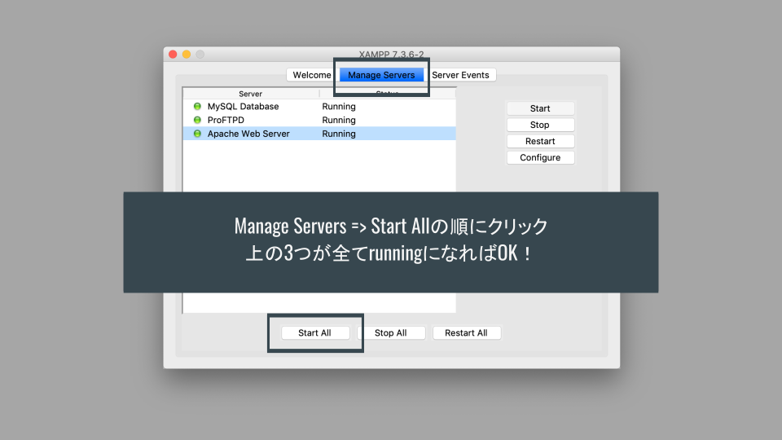
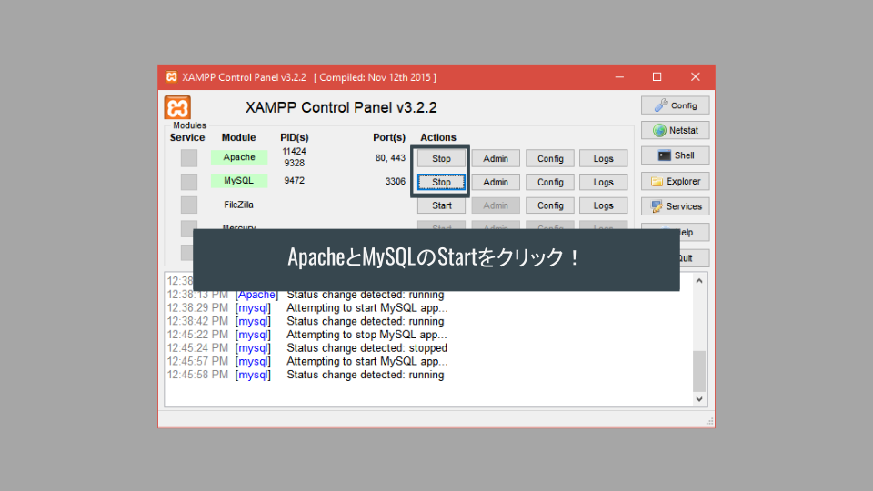
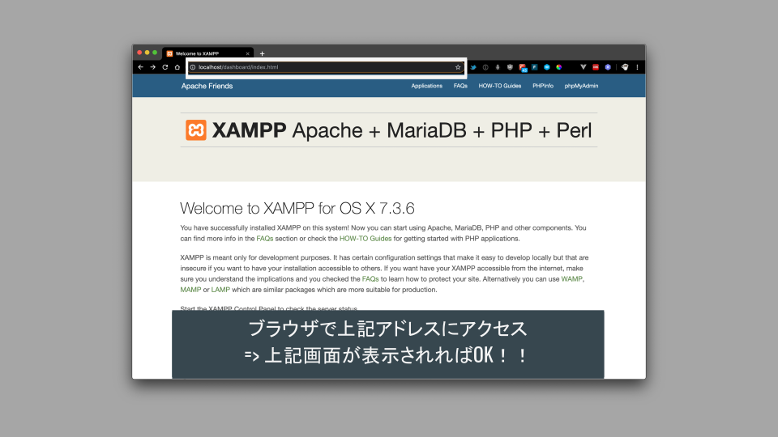

PHP事前準備
サーバとクライアント
サーバで動作する言語（サーバサイド）
- webサーバ上でプログラムが実行される．
- PHP, Ruby, Python, JAVA, (node.js), etc…
クライアント（webブラウザ）で動作する言語（クライアントサイド）
- webブラウザでプログラムが実行される．
- html, css, JavaScript
=>サーバサイド言語の開発にはサーバ上で動作させるアプリケーション（xamppなど）が必要！
（自分のPC上でサーバを動かすイメージ）
サーバのしくみとXAMPPの役割
サーバの役割及び構成
Webアプリケーションはクライアントとサーバの組み合わせで構成されている．
サーバには「アプリケーションサーバ」と「DBサーバ」が存在し，相互に連携することでアプリケーションを構築している．
（詳しい仕組みの理解は後からでOK．）

サーバサイド言語での開発とXAMPPの役割
上記のとおり，PHP（及び他のサーバサイド言語）を動作させるには「サーバ」が必要となる．
しかし，自身のPCで開発を行う場合に都度サーバを用意することは効率的ではない．
このような場合に自身のPC内で擬似的なサーバを用意してPHPを動作させることができるのが「xampp」である．
xamppは以下の役割を提供する．
- PHPを動作させるアプリケーションサーバ（
Apatch web server）を用意する． - データを保存するためのデータベース（
MySQL Database）を用意する． - その他いろいろ（今回の開発では使用しない）．

XAMPP環境構築
ダウンロード
下記URLにアクセスする．
https://www.apachefriends.org/jp/download.html
！！注意！！
資料作成時時点では
7.3.6 / PHP 7.3.6となっているが，現時点（2021/09/12）では8.0.9 / PHP 8.0.9が最新なのでこちらを用いること！！
↓アクセス画面
Macの人は下記からダウンロード．

Windowsの人は下記からダウンロード．

インストール
ダウンロードしたらインストールを進める．

動作確認（サーバ起動）
インストールが済んだらアプリケーションを立ち上げる．
Macの人は以下のようにサーバを起動させる．

Windowsの人は以下の画面．

動作確認（画面表示）
アプリケーションサーバ動作確認
ブラウザでhttps://localhost/にアクセスして下記画面が表示されればOK．

DBサーバ動作確認
ブラウザでhttps://localhost/phpmyadminにアクセスして下記画面が表示されればOK．

まとめ
下記3点が実施できていることを確認しよう！
- XAMPPの起動確認
- http://localhost/のアクセス確認
- http://localhost/phpmyadminのアクセス確認
PHP基礎
本講義の内容とゴール
本講義の内容
- PHPの基本的な開発手順．
- PHPを用いた簡単な処理の実装．
- データ送受信とファイル操作機能を用いたtodoリストアプリケーションの実装．
本講義のゴール
- Webアプリケーションの仕組みをと動きを把握する（大事）！
- PHP（の開発手順）に慣れる！
- PHPを用いたデータの送受信とファイルの操作ができるようになる！
準備
以下3点ができているか確認しよう！
- XAMPPの起動確認
- http://localhost/のアクセス確認
- サンプルフォルダを「htdocs」フォルダに入れる
PHP概要
サーバサイドの役割
様々なWebアプリケーションが存在するが，基本のサーバサイド処理は同様である．
基本の機能は何らかのデータを扱うことである．
例
- twitter => ツイート，検索，タイムラインの表示，etc
- facebook => 投稿，検索，記事の更新，コメント，etc
- wordpress => ブログ記事の投稿，編集，削除，etc
※：アプリケーションは必ずしもPHPで作られているわけではない！！
💡 Key Point
上記の処理は以下の4つに集約される．
- 📝 データの「作成」（Create）
- 📖 データの「参照」（Read）
- 🔄 データの「更新」（Update）
- 🗑 データの「削除」（Delete）
これら4種類の処理の頭文字をとって「CRUD」と呼ぶ．
PHP基礎
サーバサイド言語での開発
PHP（及び他のサーバサイド言語）を動作させるには「サーバ」が必要となる．
しかし，自身のPCで開発を行う場合に都度サーバを用意することは効率的ではない．
このような場合に自身のPC内で擬似的なサーバを用意してPHPを動作させることができるのが「xampp」である．
xamppは以下の役割を提供する．
- PHPを動作させるアプリケーションサーバ（
Apatch web server）を用意する． - データを保存するためのデータベース（
MySQL Database）を用意する． - その他いろいろ（今回の開発では使用しない）．

開発の手順
xamppはPC内にlocalhostというサーバを用意してくれる．
このサーバ内にPHPファイルを配置することでPHPのコードを動かすことができる．
PC内では予め指定されたディレクトリ（htdocs）がサーバの役割をするよう決められているため，まずPHPファイルを指定のディレクトリに配置する作業が必要となる．
サンプルフォルダを下記のディレクトリへ移動する！
- windows :
C\xampp\htdocs\ - mac :
/Applications/xampp/xamppfiles/htdocs/
💡 Key Point
【重要】開発の手順は以下の流れとなる．
- xamppを起動する
- phpファイルが入ったフォルダをhtdocsに配置
- vs codeでhtdocsの上記フォルダを開く
- phpのコードを書く
- ブラウザでlocalhostにアクセスして動作確認
以降，3-5の繰り返し！
※一通り終わったらxamppを終了させることを推奨（次回起動でコケる）
PHP基礎
PHPの記述
PHPは「PHPファイル」に記述する．
PHPファイルの作成
- 拡張子を「
.php」にする． - 例：「
index.php」「create.php」など．
開始タグと終了タグ
- 「
<?php」で始まり「?>」で終了（phpしか書かない場合，終了タグは省略可）． - 開始タグと終了タグの間に書かれた処理がサーバ上で実行される！
- タグ以外の部分（HTMLなど記述した場合）はサーバでは実行されない（そのままソースコードがブラウザに送信される）．
<?php
// ここにPHPの処理を書く
// ...
?>
// ここから下に書いたコードはサーバで実行されない
// （HTMLなどを書く）
変数と文字列
変数の扱いはJavaScriptと大きく変わらないが，以下の点に注意する．
- 変数名は必ず「
$****」←$で始めるルール！ - 文字列はシングルクォーテーションかダブルクォーテーションで囲む．
$の次に数字はNG（JavaScriptと同様）．_などの記号はOK．
// 数値
$number = 100;
// 文字列
$name = 'engineer';
// 数値スタートはNG
$1lang = 'php';
// 後の数字はOK
$lang2 = 'javascript';
// 記号もOK
$_lang = 'Rust';
変数と文字列は「.」でつなげる．
ダブルクォーテーションを用いる場合は{}で変数を埋め込むことができる（JavaScriptの``と${}に相当）．
$str1 = 'ジーズで' . $lang2 . 'を勉強中！';
// こっちのほうが楽かな．．！
$str2 = "ジーズで{$lang2}を勉強中！";
配列と連想配列
配列
JavaScriptと同様の形式．
データを確認する際にはechoまたはvar_dump()を用いる．
echoで値自体を出力する．var_dump()では配列などの構造も見られる．- デバッグの基本は
var_dump()（JavaScriptのconsole.log()的な）！！！
// 配列
$array = ['JavaScript', 'PHP', 'Rust', 'COBOL'];
// `echo`で画面上にデータを表示できる．
echo $array[2]; // Rust
// 変数や配列の中身や構造を表示
var_dump($array);
連想配列
連想配列はJavaScriptにおける「オブジェクト」に相当する．
- 「キー」「バリュー」のセット．
- キー名を指定して値を取り出すことができる．
// 連想配列
$array2 = [
"フロント" => "JavaScript",
"サーバ" => "PHP",
"iOS" => "Swift",
"関数型" => "Haskell"
];
// キー名を指定して値を取り出す
echo $array2['サーバ'];
条件分岐
条件分岐の構文はJavaScriptと同様．
// 0から1のランダムな数を発生させる
$number = rand(0, 1);
// 1かそれ以外で条件分岐
if ($number == 1) {
echo '値は1です';
} else {
echo '値は1以外です';
}
条件分岐を使用したおみくじの例
// 1から5の乱数を作成
$random_number = rand(1, 5);
// 乱数の値で条件分岐
if ($random_number == 1) {
$result = '大吉';
} elseif ($random_number == ...) {
$result = ...
} elseif (...) {
// ...
}
echo $result;
PHPとHTMLの組み合わせ
echoで処理結果を出力できるが，ブラウザに値が表示されるだけで気が利いていない．
そこで，PHPとHTMLを組み合わせて画面を作成する機能を利用してみる．
- html内に
<?=変数名?>と記述することでPHPの変数を埋め込める． - PHPで処理した結果からHTMLをつくるイメージ．
<?php
// いろいろな処理
$result = '大吉';
?>
// ここからhtmlの記述
<!DOCTYPE html>
<head>
// 省略
</head>
<body>
<h1>今日の運勢は<?=$result?>です！</h1>
</body>
</html>
💡 Key Point
PHPとHTMLが動く順序を把握しよう！
- PHPの処理が実行される．
- 処理の結果作成された値がHTMLに埋め込まれ，HTMLが完成する．
- HTMLのデータがブラウザに送信される．
- 画面にHTMLが表示される．
PHPの練習
omikuji.phpにおみくじの処理を作成し，HTMLと組み合わせて画面に結果を表示しよう．
クライアント - サーバ間の通信
サーバへデータを送る，とは？？
htmlファイルやphpファイルから別のphpファイルへデータを送る． データを受け取ったphpファイルがDBへの保存などの処理を実行．
データ送信には以下の2種類が存在する．
- GET
- POST
どちらの場合も手順は同様．
💡 Key Point
必ず送信側ファイルと受信側ファイルの2つでやり取りを行う．
GETでのデータ送受信
GET方式でデータをやり取りする場合の流れ．
送信側の処理
<form></form>を用いてデータを送信する．必ず以下の3項目を設定する．
- データの送信宛先（
action="data_get_confirm.php"）． - データの送信方法（
method="GET"）． - データの項目名（
name="hoge"）．
受信側の処理
- 送信されたデータは
$_GET変数に値が格納される． $_GETは連想配列形式となっており，送信側のnameで設定した値がキーとなる．- 個別の値を取り出して変数に格納すれば，後は通常の変数として処理可能．
送信側のコード
// data_get.php
// formタグに`action`と`method`を記述
// 個々の項目（inputタグ）に`name`を指定する
<form action="data_get_confirm.php" method="GET">
<div>
todo: <input type="text" name="todo">
</div>
<div>
deadline: <input type="date" name="deadline">
</div>
</form>
受信側のコード
- GETで送信された情報は
$_GETに入って送られる． - まず「情報が受け取れているかどうか」をチェックすることが大事！！
- （情報が受け取れないと以降どうしようもない）
exit()は以降の処理を中止する．
// data_get_confirm.php
<?php
// 必ず最初にチェック！！内容を確認したらコメントアウトすること．
var_dump($_GET);
exit();
// キー名に送信元ファイルのname属性を指定する．
$todo = $_GET['todo'];
$deadline = $_GET['deadline'];
?>
GET方式の特徴
- サーバから情報を取得する． URLに情報を追加して送信できる．
- データの特定（自分の名前で検索）など，少量のデータ送信に向く（URLにデータが含まれている）．
- URLにデータが含まれるため，URLをシェアするだけでデータを共有できる．
POSTでのデータ送受信
POST方式でデータをやり取りする場合の流れ（ほとんどGETと同様）．
送信側の処理
<form></form>を用いてデータを送信する．必ず以下の3項目を設定する．
- データの送信宛先（
action="data_post_confirm.php"）． - データの送信方法（
method="POST"）． - データの項目名（
name="hoge"）．
受信側の処理
- 送信されたデータは
$_POST変数に値が格納される． $_POSTは連想配列形式となっており，送信側のnameで設定した値がキーとなる．- 個別の値を取り出して変数に格納すれば，後は通常の変数として処理可能．
送信側のコード
// data_post.php
// formタグに`action`と`method`を記述
// 個々の項目（inputタグ）に`name`を指定する
<form action="data_post_confirm.php" method="POST">
<div>
todo: <input type="text" name="todo">
</div>
<div>
deadline: <input type="date" name="deadline">
</div>
</form>
受信側のコード
- POSTで送信された情報は
$_POSTに入って送られる． - 以降の流れは
GETの場合と同様．
// data_post_confirm.php
<?php
// POSTの場合も必ず最初にチェック！！
var_dump($_POST);
exit();
// キー名に送信元ファイルのname属性を指定する．
$todo = $_POST['todo'];
$deadline = $_POST['deadline'];
?>
POST方式の特徴
- サーバにデータを送信するときに使用．情報を見えないように送信する方法
- 個人情報など．（送れるデータ量がGETと比較して多い）
- ファイルを送信する場合にも使用
【参考】XSS : クロスサイトスクリプティング
formに悪意あるJavaScriptを埋め込まれて実行される場合がある．
HTMLにデータを埋め込む際に対策できる．
<?php
$hoge = $_POST['hoge'];
?>
// ここからhtmlの記述
<!DOCTYPE html>
<head>
// 省略
</head>
<body>
<p>JavaScriptが送信されると実行されてしまいます<?=$hoge?></p>
<p>ただの文字列として処理されます<?=htmlspecialchars($hoge, ENT_QUOTES);?></p>
</body>
</html>
次の項では，データ送信機能を用いて検索処理を実装してみよう．
パラメータ送信による検索機能の実装
サーバへのデータ送信を用いて，ユーザの入力値によるデータ検索を実装してみよう．
処理の流れ
- ユーザがデータを入力する画面を準備する．
- 検索ボタンクリックでサーバにユーザが入力したデータを送信する．
- サーバ側では，受け取ったキーワードを用いて予め用意されたデータの中から該当するものを抽出し，画面を構成する．
データの確認
今回は下記のデータを使用する（すでにファイル内にデータ用意済）．
入力画面でキーワードを入力し，このデータの中からキーワードが含まれるものだけを抽出して画面に表示する．
| id | name | hero | rival |
|---|---|---|---|
| 1 | ファントムブラッド | ジョナサン・ジョースター | ディオ・ブランドー |
| 2 | 戦闘潮流 | ジョセフ・ジョースター | カーズ |
| 3 | スターダストクルセイダース | 空条承太郎 | DIO |
| 4 | ダイヤモンドは砕けない | 東方仗助 | 吉良吉影 |
| 5 | 黄金の風 | ジョルノ・ジョバァーナ | ディアボロ |
| 6 | ストーンオーシャン | 空条徐倫 | エンリコ・プッチ |
| 7 | スティール・ボール・ラン | ジョニィ・ジョースター | ファニー・ヴァレンタイン |
| 8 | ジョジョリオン | 東方定助 | 透龍 |
ユーザ入力データの送信
まずは検索フォームを用意し，POST でサーバにデータを送信する．
// data_input.php
<form action="data_select.php" method="post">
<fieldset>
<legend>検索キーワード入力画面</legend>
<div>
keyword: <input type="text" name="keyword">
</div>
<div>
<button>検索</button>
</div>
</fieldset>
</form>
データの受け取り
データを受け取る場合には必ずvar_dump()を用いてデータを受け取れていることを確認する．
// data_select.php
var_dump($_POST);
exit();
キーワードを用いた検索と画面の構成
- 受け取ったキーワードを用いて，該当するデータのみ含まれる配列を作成する．
id，name，hero，rivalいずれかにキーワードが含まれていれば OK とする． - 作成した配列から，画面を構成するためのタグを構成する．
// data_select.php
$keyword = $_POST['keyword'];
$results = array_filter($data, function ($x) use ($keyword) {
return str_contains($x['id'], $keyword)
|| str_contains($x['name'], $keyword)
|| str_contains($x['hero'], $keyword)
|| str_contains($x['rival'], $keyword);
});
$output = '';
foreach ($results as $result) {
$output .= "<tr><td>{$result['id']}</td><td>{$result['name']}</td><td>{$result['hero']}</td><td>{$result['rival']}</td></tr>";
}
構成したタグを HTML 部分に埋め込み．
// data_select.php
// 省略
<body>
<fieldset>
<legend>検索結果</legend>
<a href="data_input.php">入力画面</a>
<table>
<thead>
<tr>
<th>id</th>
<th>name</th>
<th>hero</th>
<th>rival</th>
</tr>
</thead>
<tbody>
<!-- ここに`<tr><td>'id'</td><td>'name'</td><td>'hero'</td><td>'rival'</td></tr>`の形式でデータが表示する -->
<?= $output ?>
</tbody>
</table>
</fieldset>
</body>
// 省略
練習
data_input.phpとdata_select.phpに上記の処理を記述して動作を確認しよう！
data_input.phpのフォーム部分にデータ送信のためのコードを記述しよう．data_select.phpでデータが受け取れることを確認！data_select.phpで受け取ったデータを用いてデータを検索し，画面に表示する処理を記述！
data_input.phpから検索キーワードを送信し，キーワードが含まれるデータのみ抽出されて表示されれば OK！
PHP_DB連携_CRUD処理前半
本講義の内容とゴール
本講義の内容
- DBの基本的な扱い．
- SQLを用いたDB操作（データ作成，データ参照）．
- PHP上でのSQL実行とtodoリスト（Webアプリケーション）の連携を実装．
本講義のゴール
- DBの構成や動き方を理解する！
- SQLでDBを操作する基本を理解する！
- PHPでDBを操作できるようになる！
準備
以下4点ができているか確認しよう！
- XAMPPの起動確認
- http://localhost/のアクセス確認
- http://localhost/phpmyadminのアクセス確認
- サンプルフォルダを「htdocs」フォルダに入れる
DBの基本
DBとは
- web上にデータを保存するためのもの．
- 構造はエクセルなどと対比するとイメージしやすい！
- データを操作するにはSQL（言語）を用いる．
使い所
- webアプリケーションでデータを保存する場合のほとんど．
利用シーンの例
- ECサイトの商品データ（商品名，画像，説明文）
- サービスに登録しているユーザの情報（ユーザ名，アドレス，etc）
- ブログの投稿内容（投稿日時，タイトル，画像，本文，etc）
DBのデータ構造と概念
エクセルと同様のデータ構造となっている．実際にデータが格納されるのは「テーブル」であり，テーブルをどう設計するかがアプリケーションの根幹となる．
| DBの概念 | エクセルの概念 |
|---|---|
| データベース | エクセルファイル |
| テーブル | シート |
| レコード | 行 |
| カラム | 列 |
💡 Key Point
テーブル設計を行う際には，エクセルやスプレッドシートに書き出しながら作業すると視覚的に確認できるのでオススメ．
データ構造の例
ECサイトの商品データをイメージしたテーブルを下記に示す．
（下記のデーブル構造はまだ改善点があるが，後の講義で解説する．）
| id | product_name | price | category | image_url |
|---|---|---|---|---|
| 1 | Laphroaig | 40 | whisky | ./images/laphroaig.png |
| 2 | Ardbeg | 45 | whisky | ./images/ardbeg.png |
| 3 | Caolila | 50 | whisky | ./images/caolila.png |
| 4 | Kilchoman | 50 | whisky | ./images/kilchoman.png |
| 5 | Bowmore | 45 | whisky | ./images/bowmore.png |
| 6 | PortCharlotte | 55 | whisky | ./images/portcharlotte.png |
| ... | ... | .. | ... | ... |
DBの動き方のイメージ
「サーバ」には3種類存在し，相互に連携しながらWebアプリケーションを動作させている．ただし，Webサーバとアプリケーションサーバは区別の概念が難しいため，一旦「DBサーバとそれ以外」という理解で進めてしまってOK．
- 「Webサーバ」：ブラウザにデータを返す．
- 「アプリケーションサーバ」：PHPなどのサーバサイド言語を動かす．
- 「DBサーバ」：データを提供する．
ブラウザ，PHP，DBが連携するイメージを以下に示す．

💡 Key Point
処理の流れを把握しよう！
例えば，PHPとDBを連携させ，保存されているデータを画面に表示する流れは以下のとおりとなる．
- PHPからDBサーバに接続する．
- DBを操作するSQLを実行し，必要なデータを取得する．
- 取得したデータをHTML上に反映させ，画面に表示する．
DB / テーブルの作成
DBの作成
まずは基本単位となるDBを作成する．
1つのアプリケーションに対して1つのDB，というイメージでOK．
- http://localhost/phpmyadmin/にアクセス
- 「
Databases」タブをクリック - 「
Database name」に「dec_todo」を入力（DB名） - 「
utf8mb4_unicode_ci」を選択→「作成」をクリック
正常に作成されると，画面左側に作成したDB名が表示される．
テーブルとカラムの作成
今回実装するtodoリストのデータ用テーブルを準備する．
テーブルは1つのDB内に複数作成し，相互に連携してWebアプリケーションのデータを構築する．
テーブルの作成
以下の手順でテーブルを作成しよう．
- 左側のDB一覧から前項で作成したDBを選択する．
- 名前欄に「
todo_table」を入力（テーブル名）． - カラム数を「5」に設定する．
- 「Go」ボタンをクリック．
カラムの設定
テーブルに格納されるデータは定められた形式（文字列，数値，日付など）で保存しなければならない．
カラム設定時，各カラムに「名前」と「データ型」を設定する必要がある．下記の表に従ってカラム名とデータ型を設定しよう．
| カラム名 | データ型 | 長さ | その他設定項目 |
|---|---|---|---|
id | INT | 12 | インデックスを「PRIMARY」に設定．「A_I」にチェック． |
todo | VARCHAR | 128 | |
deadline | DATE | - | |
created_at | DATETIME | - | |
updated_at | DATETIME | - |
- idは単一のデータを取得するためのもので，インデックスを「PRIMARY」に設定する必要がある．
- また，idは自動的に数値を1から順に振るため，「A_I（Auto Increment）」にチェックしておく
全て入力したら右下の「保存する」をクリック！！
SQLによるDB操作
SQLとは
DBの操作には「SQL（言語）」を使用する．
PHPでDBを操作するときは，コード内でSQL文を実行する．
フレームワークなどではコード内では実行しない場合もある．ただし，フレームワークが関数の実行結果としてSQLを生成して実行するため，DB操作は必ずSQLで行われる．
基本のSQL4種
まずはデータ操作の基本となる4種類を押さえましょう！
INSERT：データの「作成」SELECT：データの「参照」UPDATE：データの「更新」DELETE：データの「削除」
※SQL文は大文字で記載していますが，小文字でも動作する．他の言語（本講座ではPHP）と組み合わせる際に区別しやすいよう大文字で記載している．他の言語でも大文字で扱うことが多い．
INSERT（データの作成）
指定したテーブルに対して新規データの作成を行う．
ポイントは以下！
- 「カラム名の数と順序」と「値の数と順序」を一致させる必要がある．
idカラムはDB側でAuto incrementの設定をしているためNULLを送信する．- 作成日時や更新日時は
now()を使用して実行時の日付時刻が入力されるようにする．
-- INSERT文の基本構造
INSERT INTO テーブル名 (カラム1, カラム2, ...) VALUES (値1, 値2, ...);
-- 例
INSERT INTO todo_table (id, todo, deadline, created_at, updated_at) VALUES(NULL, 'SQL練習', '2021-12-31', now(), now());
SELECT（データの参照）
SELECT文はデータの参照に使用されるが，フィルタリングやソートなど多様なオプションが用意されている．
SELECT文の基本
-- SELECT文の基本構造
SELECT 表示するカラム名 FROM テーブル名;
-- 例
-- 「*」で全て指定
SELECT * FROM todo_table;
-- 1つのカラムを指定
SELECT todo FROM todo_table;
-- 複数カラム指定
SELECT todo, deadline FROM todo_table;
フィルタリング
データの条件を設定してフィルタリングをおこなうことができる．フィルタリングにはWHEREを使用する．
-- 「WHERE」を使用して値の条件を指定できる
SELECT * FROM todo_table WHERE deadline='2021-12-31';
-- 演算子の使用
SELECT * FROM todo_table WHERE deadline <= '2021-12-31';
SELECT * FROM todo_table WHERE deadline >= '2021-12-01' AND deadline <= '2021-12-31';
-- あいまい検索
SELECT * FROM todo_table WHERE todo LIKE 'PHP%';
SELECT * FROM todo_table WHERE todo LIKE '%提出';
SELECT * FROM todo_table WHERE todo LIKE '%課題%';
ソート
並び替えにはORDER BYを使用する．
- 基準となるカラム名を指定し，
- 昇順（
ASC）か降順（DESC）を指定する．
-- ORDER BYを使用した並び替え
-- `deadline`カラムの値で降順に並び替え
SELECT * FROM todo_table ORDER BY deadline DESC;
-- `todo`カラムの値で昇順に並び替え
SELECT * FROM todo_table ORDER BY todo ASC;
取得するデータ件数の制限
LIMITを用いてデータ件数の制限を行うことができる．最新10件，などの使い方がメジャー．
-- LIMITで表示件数の制限
SELECT * FROM todo_table LIMIT 5;
-- 並び替えとの組み合わせ
SELECT * FROM todo_table ORDER BY deadline DESC LIMIT 5;
UPDATE（データの更新）
UPDATEは次回の講義で扱う．
-- UPDATE文の基本構造
UPDATE テーブル名 SET 変更データ WHERE 選択データ;
-- 例
UPDATE todo_table SET todo='PHP課題' WHERE id = 1;
-- 【重要】必ずWHEREを使用！！（忘れると全てのデータが更新されます．．！）
DELETE（データの削除）
DELETEは次回の講義で扱う．
-- DELETE文の基本構造
DELETE FROM テーブル名;
-- 例
-- 全消去
DELETE FROM todo_table;
-- 指定データのみ
DELETE FROM todo_table WHERE id = 2;
-- WHEREで指定しないとテーブルのデータが全滅する！！
-- DELETEすると復旧できないので注意！！
【参考】SQLの練習
初歩から応用までSQL問題が出題．当面は最初の方の基本的なデータ取得ができればOK．
練習
SQLはphpmyadminの「SQLタブ」から記述&実行できる．
- INSERT文を用いて
todo_tableにデータを10件程度作成しよう． - SELECT文を用いて作成したデータを取り出そう．
- WHERE, ORDER BY, LIMITを試して，想定どおりのデータを取得できるかどうか確認！
PHPとDBの連携（データ作成処理）
必要なファイル
todo_input.php：データ入力画面．todo_create.php：DB接続，データ作成処理を実行．
処理の流れ
todo_input.phpで入力されたデータをtodo_create.phpへ送信（post）．todo_create.phpでデータを受け取り，DBへの新規データ作成．- 作成完了後，
todo_input.php（入力画面）へ移動．（todo_create.phpでは画面表示なし）
送信側の処理
フォームからデータを送信する．以下3点の漏れやスペルミスがないよう確認しよう．
- action
- method
- name
// todo_input.php
<form action="todo_create.php" method="POST">
<fieldset>
<div>
todo: <input type="text" name="todo">
</div>
<div>
deadline: <input type="date" name="deadline">
</div>
<div>
<button>submit</button>
</div>
</fieldset>
</form>
受信側の処理
データ受け取り側では以下の処理を実装する．
- 必須項目の入力チェック
- データの受け取り
- DB接続
- SQL作成&実行
- SQL実行後の処理
入力チェック
DBにデータを格納する場合，基本的にデータの欠損は許されない（データなしを許可する設定もある）．
そのため，以下の条件に合致する場合は以降の処理を中止してエラー画面を表示する．
- 必須項目（todoとdeadline）のデータが送信されていない．
- 必須項目（todoとdeadline）が空で送信されている．
// todo_create.php
if (
!isset($_POST['todo']) || $_POST['todo']=='' ||
!isset($_POST['deadline']) || $_POST['deadline']==''
) {
exit('ParamError');
}
【参考】エラーメッセージを出力する意味
どこで失敗したのかをわかるようにする！
- PHPではエラーを見つけづらい．．．
- データを扱うので，異常なデータなどが作成されるとまずい．
- どこでエラーが出ているのかわからないと詰む．
- エラーにも種類がある！
- どこでうまくいっていないのかを把握できるようにエラーの処理を記述！
データ受け取り
前回講義のtxtファイルの場合と同様．POSTで送信しているため$_POSTで受け取る．
// todo_create.php
$todo = $_POST['todo'];
$deadline = $_POST['deadline'];
DB接続
DBに接続するコードは決まった形式（PDO）．
接続の際には以下の情報が必要になる．今回はdbnameのみ設定が必要．
dbname：DBの名前（今回はここをdec_todoに設定する！）port：接続ポートhost：DBのホスト名username：DB接続時のユーザ名password：DB接続時のパスワード
// todo_create.php
// 各種項目設定
$dbn ='mysql:dbname=YOUR_DB_NAME;charset=utf8;port=3306;host=localhost';
$user = 'root';
$pwd = '';
// DB接続
try {
$pdo = new PDO($dbn, $user, $pwd);
} catch (PDOException $e) {
echo json_encode(["db error" => "{$e->getMessage()}"]);
exit();
}
// 「dbError:...」が表示されたらdb接続でエラーが発生していることがわかる．
SQL作成&実行
SQL（今回はINSERT文）を実行する場合も手順が決まっている．
- SQL文の記述．
- バインド変数の設定．
- SQL実行．
// todo_create.php
// SQL作成&実行
$sql = 'INSERT INTO todo_table (id, todo, deadline, created_at, updated_at) VALUES (NULL, :todo, :deadline, now(), now())';
$stmt = $pdo->prepare($sql);
// バインド変数を設定
$stmt->bindValue(':todo', $todo, PDO::PARAM_STR);
$stmt->bindValue(':deadline', $deadline, PDO::PARAM_STR);
// SQL実行（実行に失敗すると$statusにfalseが返ってくる）
$status = $stmt->execute();
【補足】バインド変数とSQLインジェクション
SQLインジェクションと呼ばれるハッキング手法が存在する．
例えば，下記のようにコードを記述されている場合．．．
$query = "SELECT * FROM user WHERE id = '$user_id'";
$user_idに「' or 'A' = 'A」を入れると，下記と同じ意味になってしまう！
SELECT * FROM user;
-> 不正にユーザのデータを取得できてしまう！！！
バインド変数を用いることで，SQL文として実行されないようにできる！
ユーザが入力した値をSQL文内で使用する場合には必ずバインド変数を使用すること．
SQL実行時の処理
実行に失敗すると$statusにfalseが返ってくるため，条件分岐して失敗を検出する．
$stmt->errorInfo()と記述することでエラー内容（配列形式）を取得することができ，2番めのデータにエラーメッセージが格納されている．
SQLが正常に実行された場合は，データ入力画面に移動することとする．
// todo_create.php
if ($status == false) {
$error = $stmt->errorInfo();
exit('sqlError:'.$error[2]);
} else {
header('Location:todo_input.php');
}
練習
DBにデータを追加する処理を実装しよう！
todo_input.phpにフォームを作成todo_create.phpで- データを受け取る
- DBに接続
- SQL文を書いて実行
phpmyadminでテーブルを確認し，データが作成されていればOK！
- phpmyadminの「表示」タブをクリックすると最新のデータを読み込める．
PHPとDBの連携（データ参照処理）
必要なファイル
todo_read.php：DBからデータを取得してデータの一覧画面を作成する．
処理の流れ
- 表示ファイル（
todo_read.php）へアクセス時，DB接続する． - データ参照用SQL作成→実行．
- 取得したデータをHTMLに埋め込んで画面を表示．
※必要に応じて，並び替えやフィルタリングを実施してみよう．
DBデータ作成処理の実装
DB接続
新規データ作成の場合と同様の処理（DB名の設定を忘れずに！）．
// todo_read.php
$dbn ='mysql:dbname=YOUR_DB_NAME;charset=utf8;port=3306;host=localhost';
$user = 'root';
$pwd = '';
try {
$pdo = new PDO($dbn, $user, $pwd);
} catch (PDOException $e) {
echo json_encode(["db error" => "{$e->getMessage()}"]);
exit();
}
SQL作成&実行
データ作成処理と同様にSQLを記述して実行する．今回は「ユーザが入力したデータ」を使用しないのでバインド変数は不要．
また，$statusには実行結果が入るが，この時点ではまだデータ自体の取得はできていない点に注意．
// todo_read.php
$sql = 'SELECT * FROM todo_table';
$stmt = $pdo->prepare($sql);
$status = $stmt->execute();
SQL実行後の処理
SQLの実行に失敗した場合はエラーを表示して処理を中止する．
SQLが正常に実行された場合は以下の流れで処理が実行される．
fetchAll()関数でデータ自体を取得する．- 繰り返し処理を用いて，取得したデータからHTMLタグを生成する．
- （HTML内の任意の位置に作成したタグを設置
// todo_read.php
if ($status == false) {
$error = $stmt->errorInfo();
exit('sqlError:'.$error[2]);
} else {
$result = $stmt->fetchAll(PDO::FETCH_ASSOC);
$output = "";
foreach ($result as $record) {
$output .= "
<tr>
<td>{$record["deadline"]}</td>
<td>{$record["todo"]}</td>
</tr>
";
}
}
HTMLにタグを埋め込み
// todo_read.php
// html部分にデータを追加
<tbody>
<!-- ↓に<tr><td>deadline</td><td>todo</td><tr>の形でデータが入る -->
<?= $output ?>
</tbody>
【参考】JSを用いたタグ生成
上記では「PHP内でタグを生成 → HTML内に埋め込み」という実装を行っているが，タグ生成部分をJSで行うこともできる．
どちらが正解というものではないので，自身のイメージしやすいパターンで実装すれば問題ない．
<?php
// DB接続，SQL実行など
if ($status == false) {
$error = $stmt->errorInfo();
exit('sqlError:'.$error[2]);
} else {
// PHPではデータを取得するところまで実施
$result = $stmt->fetchAll(PDO::FETCH_ASSOC);
}
?>
<!DOCTYPE html>
<head>
// 省略
</head>
<body>
<table>
<tbody id="output"></tbody>
<table>
<script>
// PHPのデータをJSに渡す
const resultArray = <?=json_encode($result) ?>;
// 配列からタグ生成し，#outputに表示する
</script>
</body>
</html>
練習
DBのデータを読み出して表示する処理を実装しよう！
todo_read.phpで
- DBに接続
- SQL文を書いて実行
- 取得したデータをHTMLに埋め込み
テーブルのデータが画面に一覧で表示されればOK！
できた人はSQL文を編集してフィルタリングやソートなどを実装してみよう．
PHP_DB連携_CRUD処理後半
本講義の内容とゴール
本講義の内容
- DB内のデータを更新する処理，削除する処理を実装する．
- 関数専用のファイルを作成し，読み込みを実行を行う．
- todoリストの基本的な機能について実装を完了する．
本講義のゴール
- 基本的なCRUD処理を実装し，処理の流れを理解する．
- 複数のファイルで使用する共通のコードの管理手法を学ぶ．
- オリジナルWebサービスの構想からCRUD処理の設計につなげる．
todoアプリケーションの全体像
準備
以下4点ができているか確認しよう！
- XAMPPの起動確認
- http://localhost/のアクセス確認
- http://localhost/phpmyadminのアクセス確認
- サンプルフォルダを「htdocs」フォルダに入れる
DB接続関数の作成
DB接続は常に同じコード
実は．．．
todo_create.phpとtodo_read.phpで記述したDB接続のコードは全く同じ！- 今回作成する
todo_edit.php,todo_update.php,todo_delete.phpも同じ記述！
であれば．．！
一つの関数にまとめられる！
=> 関数用のファイルを作成しよう！（functions.php）
関数の定義
DB接続の処理は様々なファイルで実行されるため，関数専用のファイル（functions.php）に記述して他のファイルから読み込むと効率が良い．
関数を実行すると，DB接続情報を出力するように実装すると良い（return new PDO...部分）．
// functions.php
function connect_to_db()
{
$dbn='mysql:dbname=YOUR_DB_NAME;charset=utf8;port=3306;host=localhost';
$user = 'root';
$pwd = '';
try {
return new PDO($dbn, $user, $pwd);
} catch (PDOException $e) {
exit('dbError:'.$e->getMessage());
}
}
関数の実行
上で定義した関数はDB接続が必要なファイルでfunctions.phpを読み込むことで実行可能．
別ファイルの読み込みはinclude()関数を用いる．
// DB接続したいファイル（todo_create.php, todo_read.php, など）
include('functions.php');
$pdo = connect_to_db();
// 他のDB接続が必要なファイルでも上記の2行でOK！
練習
functions.phpにDB接続の関数を定義しよう！todo_create.phpとtodo_read.phpでfunctions.phpをinclude()し，関数を実行しよう！
今まで通りの動きが確認できればOK！
（これまでやっていた処理を関数にしただけなので，実行される内容はこれまでと変化なし）
PHPとDBの連携3（編集画面の作成）
処理の流れ
データ更新の処理はデータ作成処理の流れと似ている！
まずは本項で1と2を実装する．
- 一覧画面に更新ページへのリンクを作成（urlにidを追加： todo_edit.php?id=**）
- 更新ページの作成（todo_edit.php）
- 更新処理の作成（todo_update.php）
- 一覧画面に戻る
一覧画面にリンク追加
<a>を用いて編集画面（と削除処理）へのリンクを作成する．
GETメソッドが「データをURLに格納する」仕様を利用し，<a>のURLに各データのidを埋め込む．
// todo_read.php
foreach ($result as $record) {
$output .= "
<tr>
<td>{$record["deadline"]}</td>
<td>{$record["todo"]}</td>
<td>
<a href='todo_edit.php?id={$record["id"]}'>edit</a>
</td>
<td>
<a href='todo_delete.php?id={$record["id"]}'>delete</a>
</td>
</tr>
";
}
下図のようにリンクが表示されればOK．
リンクにマウスカーソルを当てると，ブラウザ左下にリンク先のURLが表示される．id=**の形で数値が表示されれば正しく指定されている．

編集画面の作成
続いて，編集画面を実装する．
本画面の役割は
- 現在テーブルに保存されている
todoとdeadlineを表示する． - ユーザが画面上でデータを編集する．
- ユーザが編集したデータをテーブル更新用ファイル（
todo_update.php）に送信する．
コードのポイントは以下．
- SELECT文を用いて
id指定し，fetch()関数でデータを取得する． - 取得したデータを
<input>の初期値として設定する． - 次の更新処理で
idが必要になるため，<input type="hidden">を用いてidを送信する．
include("functions.php");
$id = $_GET['id'];
$pdo = connect_to_db();
$sql = 'SELECT * FROM todo_table WHERE id=:id';
$stmt = $pdo->prepare($sql);
$stmt->bindValue(':id', $id, PDO::PARAM_INT);
$status = $stmt->execute();
if ($status == false) {
$error = $stmt->errorInfo();
echo json_encode(["error_msg" => "{$error[2]}"]);
exit();
} else {
$record = $stmt->fetch(PDO::FETCH_ASSOC);
}
?>
// 以下HTML部分
<form action="todo_update.php" method="POST">
<fieldset>
<legend>DB連携型todoリスト（編集画面）</legend>
<a href="todo_read.php">一覧画面</a>
<div>
todo: <input type="text" name="todo" value="<?= $record['todo'] ?>">
</div>
<div>
deadline: <input type="date" name="deadline" value="<?= $record['deadline'] ?>">
</div>
<div>
<input type="hidden" name="id" value="<?= $record['id'] ?>">
</div>
<div>
<button>submit</button>
</div>
</fieldset>
</form>
下図のように現在のデータが画面に表示されればOK．

練習
以下の処理を実装しよう！
- 一覧画面に
todo_edit.phpへのリンクを追加！（todo_delete.phpへのリンクも一緒に！） todo_edit.phpではデータをIDで検索し，該当するデータを画面に表示！
PHPとDBの連携4（データ更新処理の作成）
データ更新のSQl
-- UPDATE文の基本構造
UPDATE テーブル名 SET 変更データ WHERE 選択データ;
-- 例
UPDATE todo_table SET todo='PHP課題' WHERE id = 1;
-- 【重要】必ずWHEREを使用！！（忘れると全てのデータが更新されます．．！）
更新の処理
前項の編集画面からデータを受け取り，DBのデータを更新する．
処理の流れはtodo_create.phpとよく似ている．
データチェックと受け取り
まずはtodo，deadline，idのデータが揃っていることを確認し，データを受け取る．
// todo_update.php
if (
!isset($_POST['todo']) || $_POST['todo'] == '' ||
!isset($_POST['deadline']) || $_POST['deadline'] == '' ||
!isset($_POST['id']) || $_POST['id'] == ''
) {
echo json_encode(["error_msg" => "no input"]);
exit();
}
$todo = $_POST['todo'];
$deadline = $_POST['deadline'];
$id = $_POST['id'];
DB接続とSQL実行
続いてDB接続し，UPDATEのSQLを実行する．SQLが正常に実行された場合は一覧画面に移動する．
💡 Key Point
必ずWHEREでidを指定すること！！！
// todo_update.php
include('functions.php');
$pdo = connect_to_db();
$sql = 'UPDATE todo_table SET todo=:todo, deadline=:deadline, updated_at=now() WHERE id=:id';
$stmt = $pdo->prepare($sql);
$stmt->bindValue(':todo', $todo, PDO::PARAM_STR);
$stmt->bindValue(':deadline', $deadline, PDO::PARAM_STR);
$stmt->bindValue(':id', $id, PDO::PARAM_STR);
$status = $stmt->execute();
if ($status == false) {
$error = $stmt->errorInfo();
echo json_encode(["error_msg" => "{$error[2]}"]);
exit();
} else {
header('Location:todo_read.php');
exit();
}
練習
todo_update.phpでUPDATEの処理を実装しよう！
更新処理実行後，一覧ページでデータが更新されていればOK！
（phpmyadminでも確認しよう）
PHPとDBの連携5（データ削除処理）
データ削除のSQL
-- DELETE文の基本構造
DELETE FROM テーブル名;
-- 例
-- 全消去
DELETE FROM todo_table;
-- 指定データのみ
DELETE FROM todo_table WHERE id = 2;
-- WHEREで指定しないとテーブルのデータが全滅する！！
-- DELETEすると復旧できないので注意！！
処理の流れ
- ✅ 一覧画面に削除ページへのリンクを作成（urlにidを追加
todo_delete.php?id=**） - 削除処理の作成（
todo_delete.php） - テーブルのデータを削除したら一覧画面に戻る
削除の実装
削除に必要なのはidのみである．編集画面に移動する場合と同様にGETでidを受け取る．
データを受け取ったら，下記の順で処理を記述する．
- DB接続
- SQL実行（DELETE文）
- 一覧画面へ移動
💡 Key Point
⚠️ DELETE文を実行する場合には必ずWHEREで
idを指定すること．
$id = $_GET['id'];
include('functions.php');
$pdo = connect_to_db();
$sql = 'DELETE FROM todo_table WHERE id=:id';
$stmt = $pdo->prepare($sql);
$stmt->bindValue(':id', $id, PDO::PARAM_STR);
$status = $stmt->execute();
if ($status == false) {
$error = $stmt->errorInfo();
echo json_encode(["error_msg" => "{$error[2]}"]);
exit();
} else {
header("Location:todo_read.php");
exit();
}
練習
以下の処理を実装しよう！
- ✅ 一覧画面に
todo_delete.phpへのリンクを追加！ todo_delete.phpではデータをIDで検索し，該当するデータを削除！- 完了したら
todo_read.phpへ戻る．
削除処理実行後，一覧ページでデータが削除されていればOK！
（phpmyadminでも確認しよう）
PHP_セッション
本講義の内容とゴール
本講義の内容
- セッション機能の確認．
- ログイン処理，ログアウト処理の実装．
- todoリストをログインしていないと使えないようにする．
本講義のゴール
- ページ間でデータ共有する方法を知る！
- プロダクトの中で最適なデータの管理方法を選べるようになる！
- 「ログインしているとはなにか」をマスター！
準備
以下4点ができているか確認しよう！
- XAMPPの起動確認
- http://localhost/のアクセス確認
- http://localhost/phpmyadminのアクセス確認
- サンプルフォルダを「htdocs」フォルダに入れる
セッションとは
セッションとはなにか
- サーバに変数などを保存できる仕組み．
- サーバ自体に変数を定義する．
- サーバ上にあるどのファイルからでも値を取り出せる！
普通の変数を使用した例
各ファイルで用意した変数はそのファイル内でしか使用できない．
| file | data |
|---|---|
| hoge.php | $number = 100; |
| fuga.php | $keyword = 'ジーズ'; |
| piyo.php | $array = ['JavaScript', 'PHP', 'Swift', 'Rust']; |
セッション変数を活用
セッション領域自体にデータを保存することができ，サーバ上のどのファイルからでもアクセスすることができる．
セッション変数は$_SESSIONで記述する（後述）．
| file | session |
|---|---|
| hoge.php |
$_SESSION['number'] = 100; $_SESSION['keyword'] = 'ジーズ'; $_SESSION['array'] = ['JavaScript', 'PHP', 'Swift', 'Rust']; |
| fuga.php | |
| piyo.php |
セッションの使用と「session_id」
セッションは下記の流れで使用する．
- セッションの開始．
- セッションがスタートすると「セッション領域」が作られる．
- セッション領域識別用のid（
session_id）が発行される． - セッションの機能が使えるようになり，情報を保存できる．
- session_idの再生成ができる．
- 必要に応じてセッション変数（
$_SESSION）にデータを保存． session_idの再生成- 悪意あるサイトに
session_idを読まれてしまうとハッキングのリスク． - ページ移動などのタイミングでidを再生成し，最新版だけを有効にする．
- 悪意あるサイトに
- セッションの終了．
- 保存されている情報などを破棄する．
session_idの確認
まずはセッションの開始を宣言する． セッションに関連する機能を使用する場合には必ず記述する必要がある．
session_start();
セッションを開始すると自動的にidが発行されてブラウザにidが保存される．
idはサーバとブラウザの双方に保存され，下記の方法で確認することができる．
- PHPファイル上で
session_id();で取得可能． - ブラウザで「検証 → Application → Cookies → localhost」
- 現在有効なsession_idが保存されている．
session_idの再生成
session_idがバレると他の人にsessionの中身をいじられてしまう可能性がある．．！
session_regenerate_id();を使用するとidを再生成して更新できる．
（保存されているデータ自体は変更なし）
使い所
- ログインしたらid発行してログイン情報を管理．
- ページ移動など特定の操作をしたタイミングで再生成して古いidを無効化する．
// session_regenerate_id.php
<?php
// セッションの開始
session_start();
$old_session_id = session_id();
// 再生成
session_regenerate_id(true);
$new_session_id = session_id();
// 新旧のidを画面に表示して更新されていることを確認
echo '<p>旧id' . $old_session_id . '</p>';
echo '<p>新id' . $new_session_id . '</p>';
exit();
?>
💡 Key Point
session_regenerate_id(true);のtrueが大切！！
trueを設定することで古いidを無効にすることができる．
セッションの終了
セッションの終了に際しては保存したデータの削除が必要になる．
以下の3つの手順でデータを削除する．
- セッション変数の削除．
- ブラウザに保存されたセッションidの有効期間操作．
- セッション領域の削除．
これらの処理は後のステップで実装する．
// 指定したsession変数の削除
unset($_SESSION[key]);
// session情報の全削除
$_SESSION = array();
// ブラウザに保存した情報の有効期限を操作
setcookie(session_name(), '', time() - 42000, '/');
// session領域自体をを破壊
session_destroy();
練習
下記の処理を実装してセッションとsession_idの挙動を確認しよう．
- idを発行して確認しよう！
- 再生成して旧idと新idを表示しよう！
検証画面で確認し，リロードの度に新IDと一致すればOK！
セッション変数
セッション領域に保存される変数を使用することで，複数のファイルで横断的にデータを扱うことができる．
セッション変数の形式
セッション変数は$_SESSIONで記述する．
連想配列形式（JavaScriptのオブジェクトに相当）で扱われる．
| file | session |
|---|---|
| hoge.php |
$_SESSION['number'] = 100; $_SESSION['keyword'] = 'ジーズ'; $_SESSION['array'] = ['JavaScript', 'PHP', 'Swift', 'Rust']; |
| fuga.php | |
| piyo.php |
セッション変数の定義
セッション変数を扱う際にもsession_start();は必須！
セッション変数は$_SESSION['キー名']の形式で宣言するが，使い方は通常の変数と同様である．
// session01.php
<?php
session_start();
// セッション変数に値を代入
$_SESSION['keyword'] = 'PHP';
echo $_SESSION['keyword'];
exit();
?>
セッション変数の使用
セッション変数はセッション領域に保存されているので，ファイル内で定義していなくても呼び出すことができる．
使い方は通常の変数と同様．
<?php
// session02.php
session_start();
// `$_SESSION['keyword']`はセッション変数なので定義していなくても呼び出せる
$string = $_SESSION['keyword'] . '&MySQL';
echo $_SESSION['keyword'];
exit();
?>
練習
下記の処理を記述して，セッション変数の動き方を確認しよう．
session01.phpでsession変数を定義しよう！session02.phpで定義した変数を呼び出して出力しよう！
認証処理の実装1（ログインとログアウト）
必要なファイル
ログイン処理にtodo_login.phpとtodo_login.php，ログアウト処理にtodo_logout.phpを使用する．
| file | 役割 |
|---|---|
todo_login.php | ログイン情報（username, password）を入力して送信する． |
todo_login_act.php | 送信されたデータを受け取り，DB関連の処理を実行する． |
todo_logout.php | セッション，ログイン情報を破棄する． |
ログイン処理
ログイン処理の流れ
- ログインフォーム情報を入力して送信（
todo_login.php） - 送信されたデータを受け取る（
todo_login_act.php） - 受け取ったデータがDBにあるかどうかチェック（
todo_login_act.php）- 成功時（DBにユーザのデータが存在した場合）
- DBにログイン情報があればセッション変数に格納（
todo_login_act.php） - セッション変数にログイン情報を保持して
todo_read.phpに移動
- DBにログイン情報があればセッション変数に格納（
- 失敗時（DBにユーザのデータが存在しなかった場合）
todo_login.phpに戻るリンクを表示する（ログイン失敗）
- 成功時（DBにユーザのデータが存在した場合）
ログインフォームにaction，method，nameを設定する．
データをtodo_login_act.phpに送信する．
// todo_login.php
<form action="todo_login_act.php" method="POST">
// ...
<div>
username: <input type="text" name="username"> // name属性
</div>
<div>
password: <input type="text" name="password"> // name属性
</div>
<div>
<button>Login</button>
</div>
// ...
</form>
データを受け取ったら，ユーザのテーブルに該当するデータが存在するかどうかを確認する．
// todo_login_act.php
<?php
session_start();
include('functions.php');
$username = $_POST['username'];
$password = $_POST['password'];
$pdo = connect_to_db();
// username，password，is_deletedの3項目全てを満たすデータを抽出する．
$sql = 'SELECT * FROM users_table WHERE username=:username AND password=:password AND is_deleted=0';
$stmt = $pdo->prepare($sql);
$stmt->bindValue(':username', $username, PDO::PARAM_STR);
$stmt->bindValue(':password', $password, PDO::PARAM_STR);
$status = $stmt->execute();
データの有無で条件分岐する．
- データが存在しない場合はログイン画面へ移動するリンクを表示する．
- データが存在した場合はセッション変数にsession_idとユーザのデータを入れ，一覧画面に移動する．
if ($status == false) {
$error = $stmt->errorInfo();
echo json_encode(["error_msg" => "{$error[2]}"]);
exit();
} else {
$val = $stmt->fetch(PDO::FETCH_ASSOC);
if (!$val) {
echo "<p>ログイン情報に誤りがあります</p>";
echo "<a href=todo_login.php>ログイン</a>";
exit();
} else {
$_SESSION = array();
$_SESSION['session_id'] = session_id();
$_SESSION['is_admin'] = $val['is_admin'];
$_SESSION['username'] = $val['username'];
header("Location:todo_read.php");
exit();
}
}
💡 Key Point
session_idはこの後使用するので必ず保存しよう．ユーザデータはアプリケーションに必要なものを適宜選別してセッションに保存する．
ログアウト
ログアウトの処理は前項のセッション終了のコードそのもの．
ユーザの痕跡をなくすことが肝要．
// todo_logout.php
<?php
session_start();
$_SESSION = array();
if (isset($_COOKIE[session_name()])) {
setcookie(session_name(), '', time() - 42000, '/');
}
session_destroy();
header('Location:todo_login.php');
exit();
練習
ログインとログアウトの処理を実装しよう！
- ログインフォームを実装！（
todo_login.php） - ログイン処理を実装！（
todo_login_act.php） - ログアウト処理を実装！（
todo_logout.php）
以下の動作が確認できればOK．
- 存在するユーザのusernameとpasswordを入力して一覧ページが表示される．
- 存在しないユーザのusernameとpasswordを入力してログインページへのリンクが表示される．
ユーザデータがない場合は適当なデータを入れておこう．
認証処理の実装2（認証状態の確認）
todoリストの機能はログインしているときのみアクセスできるようにしたい！
現状では，ログアウトした状態でもURLを手打ちするとアクセスできてしまう．．．
- 登録画面，一覧画面などはログイン済ユーザのみ見られるようにする
- ログインをチェックし，ログインしていない状態ならログイン画面に移動
「ログインしている」とはなにか
以下の2つの状態を「ログインしていない」とみなす！！
- 「セッション変数に
session_idを持っていない」 - 「idが最新ではない」はログインしていない状態
関数の定義
上記2条件を用いてログインの有無を判断する関数を作成する．
関数の役割は
- ログインしていない場合はログインページへ強制送還．
- ログインしている場合は
session_idを更新してセッション変数に保存する．- セッション変数には常に最新の
session_idが入っている状態にする．
- セッション変数には常に最新の
複数のファイルでチェックを行うため，関数ファイルに記述しよう！
// functions.php
function check_session_id()
{
if (!isset($_SESSION["session_id"]) ||$_SESSION["session_id"] != session_id()) {
header('Location:todo_login.php');
exit();
} else {
session_regenerate_id(true);
$_SESSION["session_id"] = session_id();
}
}
関数の実行
あとは定義した関数を「ログインしていないときに動いてほしくないPHPファイル」で実行しよう．
セッションの機能を使用するため，session_start();を忘れないように注意！
下記ファイルで実行すると良き．
todo_input.phptodo_read.phptodo_edit.phptodo_create.phptodo_create.phptodo_update.phptodo_delete.php
// ログインしていないときに動いてほしくないPHPファイル
<?php
session_start();
include('functions.php');
check_session_id();
💡 Key Point
「ログインしているユーザだけがアクセスできる画面」と「誰でもアクセスできる画面」がそれぞれどの画面なのかを明確にすることが大切．
同様に管理者ユーザのみがアクセス可能な画面を切り分けることも同様の方法で可能．
練習
メインのコンテンツは未ログインだとアクセスできないようにしよう！
- ログイン状態を確認する関数をつくろう！（functions.php）
- コンテンツのページで上記関数を実行しよう！
ログアウトした状態で各ページにアクセスできない状態（ログインページに移動）になればOK！
PHP_DB応用_RDB
本講義の内容とゴール
本講義の内容
- RDBのデータ構造紹介．
- SQLを用いたデータ集計（Like機能）．
- todoリスト一覧での集計結果表示．
本講義のゴール
- データ構造を知り，よくないテーブルのパターンを把握する！
- データの件数をカウントし，集計する！
- 複数のテーブルを結合し，必要なデータをまとめる！
準備
以下4点ができているか確認しよう！
- XAMPPの起動確認
- http://localhost/のアクセス確認
- http://localhost/phpmyadminのアクセス確認
- サンプルフォルダを「htdocs」フォルダに入れる
RDBの構造
RDB（Relational Database）とは
複雑なデータが必要なとき
- 一つのテーブルから取得できる情報は限られている．
- ECで購入したユーザの情報と商品の情報を両方取得したい場合は．．？？
複数のテーブル同士を連携（relation）させるッ！！
- テーブルの設計段階で連携させたいidのカラムをつくっておく！
- 両方のテーブルを関連付けるテーブルを「SQLで」作成する！
- 大事なのはデータの構造を見極めること！！
まずは下記2種類のデータ構造をマスターしよう！
One to Many（学部テーブルと学生テーブル）
一つの学部には複数の学生が在籍するが，学生の所属は一つ．
学部テーブル（department_table）
| id | name |
|---|---|
| 1 | 工学部 |
| 2 | 理学部 |
| 3 | 医学部 |
| 4 | 歯学部 |
| 5 | 農学部 |
| 6 | 文学部 |
| 7 | 経済学部 |
学生テーブル（student_table）
| id | name |
|---|---|
| 1 | ディオ・ブランドー |
| 2 | ツェペリ |
| 3 | リサリサ |
| 4 | カーズ |
| 5 | 花京院典明 |
| 6 | DIO |
| 7 | 吉良吉影 |
| 8 | 川尻早人 |
| 9 | パンナコッタ・フーゴ |
| 10 | ディアボロ |
| 11 | エルメェス・コステロ |
| 12 | エンリコ・プッチ |
| 13 | ジャイロ・ツェペリ |
| 14 | ファニー・ヴァレンタイン |
「多」の側に対応するidを入れる構造にすればOK．
誰がどこに所属しているかがわかるようになる！
| id | name | department_id |
|---|---|---|
| 1 | ディオ・ブランドー | 1 |
| 2 | ツェペリ | 1 |
| 3 | リサリサ | 2 |
| 4 | カーズ | 2 |
| 5 | 花京院典明 | 3 |
| 6 | DIO | 3 |
| 7 | 吉良吉影 | 4 |
| 8 | 川尻早人 | 4 |
| 9 | パンナコッタ・フーゴ | 5 |
| 10 | ディアボロ | 5 |
| 11 | エルメェス・コステロ | 6 |
| 12 | エンリコ・プッチ | 6 |
| 13 | ジャイロ・ツェペリ | 7 |
| 14 | ファニー・ヴァレンタイン | 7 |
Many to Many（学生テーブルと講義テーブル）
学生は複数の講義を選択し，講義も複数の学生に提供される．
学生テーブル（student_table）
| student_id | name |
|---|---|
| 1 | ディオ・ブランドー |
| 2 | ツェペリ |
| 3 | リサリサ |
| 4 | カーズ |
| 5 | 花京院典明 |
| 6 | DIO |
| 7 | 吉良吉影 |
| 8 | 川尻早人 |
| 9 | パンナコッタ・フーゴ |
| 10 | ディアボロ |
| 11 | エルメェス・コステロ |
| 12 | エンリコ・プッチ |
| 13 | ジャイロ・ツェペリ |
| 14 | ファニー・ヴァレンタイン |
講義テーブル（class_table）
| class_id | name |
|---|---|
| 1 | 線形代数学 |
| 2 | 微分積分学 |
| 3 | 電子回路 |
| 4 | 電気回路 |
| 5 | 情報学 |
| 6 | 情報数学 |
| 7 | 統計学 |
| 8 | 信号処理 |
| 9 | 電磁気学 |
中間テーブル
この場合，「どの講義を」「どの学生が選択するか」を表す別のテーブルを作成する．
このテーブルのことを「中間テーブル」と呼ぶ．
| class_id | student_id |
|---|---|
| 1 | 1 |
| 1 | 2 |
| 1 | 7 |
| 7 | 7 |
| 3 | 9 |
| 1 | 6 |
| 3 | 1 |
| 5 | 5 |
| 7 | 5 |
テーブルの設計
データ構造を考える際には，「どうすればうまくいくか」よりも「このパターンはマズイ」を押さえるとうまくいきやすい．
マズイパターンのことを「アンチパターン」と呼ぶが，まずは下記のパターンがないかどうか確認しよう．
💡 Key Point
出やすいアンチパターン
- ユーザの操作でテーブルが増える（減る）．
- ユーザの操作でカラムが増える（減る）．
- 一つのセル（でいいのかな？）に複数のデータ（数値など）が入る．
- なにかのデータを更新したときに，別のテーブルのデータを更新する必要がある．
Like機能の実装1（データの追加1）
前回までに作成したtodoリストにLike機能（Many to Manyの関係）を追加する！
アプリケーションの動作
- 各ユーザは複数のtodoにLikeし，各todoは複数のユーザからLikeされる．
- 一覧画面のLikeボタンをクリックしたらLikeすることができ，Like数が一覧画面に表示される．
- Likeは1ユーザ1Likeに制限する（自演禁止）．
必要な作業・処理
- ユーザテーブルといいねテーブルを作成．
- Likeボタン追加．
- Likeボタンクリック時にLikeデータを作成．
- Like数を一覧画面に表示する．
Likeテーブルを作成
新しくテーブルを作成する．テーブル名は「like_table」とする．
このテーブルでは「どのユーザが」「どのtodoに」Likeしたのかを記録する役割を持つ．
前項の「中間テーブル」にあたる．
カラム構造
| カラム名 | データ型 | 長さ | その他設定項目 |
|---|---|---|---|
id | INT | 12 | インデックスを「PRIMARY」に設定．「A_I」にチェック． |
user_id | INT | 12 | |
todo_id | INT | 12 | |
created_at | DATETIME | - |
todoリストのLike機能実装
やりたいこと
いいねボタンをクリックしたら．．．
- like_tableに「誰が」「何に」いいねをしたのかを追加
実装の方針
- todo_read.phpにいいねボタンを設置
- GETでtodoのidとユーザのidを送信する
- 受け取り側のファイル（like_create.php）で受け取ったデータをdbに登録
todo一覧画面にLikeボタンの設置
一覧画面のタグ生成部分にLikeボタンを追記する．
user_idはログイン時にセッション変数に保存している値を使用している（todo_login_act.phpを参照）．
user_idとtodo_idをlike_create.phpにGETで送信する．
// todo_read.php
$user_id = $_SESSION['id'];
// ↓タグ生成部分
$output .= "<td><a href='like_create.php?user_id={$user_id}&todo_id={$record["id"]}'>like</a></td>";
// 以下編集ボタン，削除ボタンなど
Likeデータの追加
LikeテーブルにGETで送信されてきた内容を追加する．
処理の流れ自体はシンプルなINSERT処理．
// like_create.php
include('functions.php');
$user_id = $_GET['user_id'];
$todo_id = $_GET['todo_id'];
$pdo = connect_to_db();
$sql = 'INSERT INTO like_table (id, user_id, todo_id, created_at) VALUES (NULL, :user_id, :todo_id, now())';
$stmt = $pdo->prepare($sql);
$stmt->bindValue(':user_id', $user_id, PDO::PARAM_STR);
$stmt->bindValue(':todo_id', $todo_id, PDO::PARAM_STR);
$status = $stmt->execute();
if ($status == false) {
$error = $stmt->errorInfo();
echo json_encode(["error_msg" => "{$error[2]}"]);
exit();
} else {
header("Location:todo_read.php");
exit();
}
練習
todoリストにLike機能を追加しよう．
todo_read.phpにLikeボタンを追加．like_create.phpでテーブルにデータ作成．
Likeボタンをクリックして，Likeテーブルにデータが作成されていればOK．
（phpmyadminでデータを確認しよう）
Like機能の実装2（データの追加2）
ここまでのLike機能の問題点
現状
- 連打すれば無限にLikeできてしまう．．．
- Likeしている状況であれば，Likeを取り消す処理にしたい！
実装の方針
- Likeボタンをクリックしたら，まずtodoとuserでテーブルを検索する．
- データが1件以上存在すればDELETEのSQLを実行する．
- データが存在しなければINSERTのSQL（前項で実装したもの）を実行する．
Like状態の調査
前項で作成したlike_create.phpのINSERT処理の前にデータの件数を確認したい．
件数の確認にはCOUNT()関数を使用する．
// like_create.php
// 省略
$sql = 'SELECT COUNT(*) FROM like_table WHERE user_id=:user_id AND todo_id=:todo_id';
$stmt = $pdo->prepare($sql);
$stmt->bindValue(':user_id', $user_id, PDO::PARAM_STR);
$stmt->bindValue(':todo_id', $todo_id, PDO::PARAM_STR);
$status = $stmt->execute();
if ($status == false) {
$error = $stmt->errorInfo();
echo json_encode(["error_msg" => "{$error[2]}"]);
exit();
} else {
$like_count = $stmt->fetchColumn();
// まずはデータ確認
var_dump($like_count);
exit();
}
Like数で条件分岐（削除or作成）
$like_countで条件に該当するデータの件数が取得できるのでまずは確認する．
データの件数が確認できたら，件数が0かそれ以外で条件分岐する．0件でなければDELETE文が作成され，0件の場合はINSERT文が作成される．
// like_create.php
if ($like_count != 0) {
// いいねされている状態
$sql = 'DELETE FROM like_table WHERE user_id=:user_id AND todo_id=:todo_id';
} else {
// いいねされていない状態
$sql = 'INSERT INTO like_table (id, user_id, todo_id, created_at) VALUES (NULL, :user_id, :todo_id, sysdate())';
}
// 以下は前項と変更なし
$stmt = $pdo->prepare($sql);
$stmt->bindValue(':user_id', $user_id, PDO::PARAM_STR);
$stmt->bindValue(':todo_id', $todo_id, PDO::PARAM_STR);
$status = $stmt->execute();
if ($status == false) {
$error = $stmt->errorInfo();
echo json_encode(["error_msg" => "{$error[2]}"]);
exit();
} else {
header("Location:todo_read.php");
exit();
}
このように記述することで，1ユーザ1Likeの状態を実現することができる．
練習
todoリストのLike機能を編集しよう．
like_create.phpでLike数カウント -> 条件分岐してDELETE or INSERT．
以下2条件で動作確認！
- 「Likeされていない状態」でLikeボタンをクリックして，Likeテーブルにデータが作成されていればOK．
- 「Likeされている状態」でLikeボタンをクリックして，Likeテーブルのデータが削除されていればOK．
phpmyadminでデータを確認し，10件程度データが入っている状態にしておこう．
Like機能の実装3（集計とLike数表示）
やりたいこと
- ここまででLike数を1ユーザあたり1件に制限する処理を実装した．
- しかし，現状ではLike状況を確認するにはphpmyadminにアクセスして確認するしかなくアプリケーション側に情報が表示されない．
- そこで，本項ではLikeされた件数をtodo一覧画面に表示するための処理を実装する．
手順
- Like情報が保存されている「Likeテーブル」を用いて，各todoが何件Likeされているのかを集計する．
- 「todoテーブル」と「集計結果のテーブル」を結合し，両方のデータを一度に取得できるようにする．
- 取得したデータを画面に表示する．
集計
GROUP BYを使うと集計ができる！
例（phpmyadminで実行しよう！）
SELECT
todo_id,
COUNT(id) AS like_count
FROM
like_table
GROUP BY
todo_id
「like_table」の「todo_id」ごとに「idの数」を「like_count」というカラム名で表示する．
集計したカラムのカラム名は自由に設定できる（しなくても良い）が，後ほど再利用する場合は何らかの名前を指定しておくのがオススメ．
実行すると下記のような集計結果のテーブルが表示される．下記は一例なので，like_tableのデータによって件数は変化する．
| todo_id | like_count |
|---|---|
| 1 | 1 |
| 2 | 1 |
| 4 | 2 |
| 5 | 2 |
💡 Key Point
このSQL文は「集計結果のテーブル」を出力する！！
注意点
- COUNT()で件数を取得しているが，集計関数以外だとエラーになる
- その他の集計関数
MIN(),MAX(),SUM(), etc...
Like機能の実装4（データの結合）
画面表示のためにデータをまとめる．
- 現状，画面の表示は
todo_tableからデータなので，集計結果を組み込めない．．． - テーブルを結合させることで，集計結果もまとめて表示できる！
SQLの考え方
- 「
todo_table」と「集計結果のテーブル」をつなげる． - 「
todo_tableのid」と「集計結果のテーブルのtodo_id」を対応させる． - 「集計結果のテーブル」は前項で取得したアレ
テーブルの結合（JOIN）
JOINを使うとテーブルの結合ができる！
例
JOINを使う場合の書式は以下のとおり．この場合は以下の条件で結合する．
- 別々のテーブルで管理している「ユーザ」と「ユーザが所属するカテゴリ」を1つの画面に表示したい．
- 「
user_table」「category_table」を結合する． - 結合する際には，「
user_tableのcategory_idカラム」と「category_tableのcategory_idカラム」を対応させる．
user_table
| user_id | user_name | category_id |
|---|---|---|
| 1 | ディオ・ブランドー | 1 |
| 2 | カーズ | 2 |
| 3 | DIO | 3 |
| 4 | 花京院典明 | 3 |
| 5 | ジャイロ・ツェペリ | 7 |
category_table
| category_id | category_name |
|---|---|
| 1 | ファントムブラッド |
| 2 | 戦闘潮流 |
| 3 | スターダストクルセイダース |
| 4 | ダイヤモンドは砕けない |
| 5 | 黄金の風 |
| 6 | ストーンオーシャン |
| 7 | スティール・ボール・ラン |
SQL文
SELECT
*
FROM
user_table
LEFT OUTER JOIN
category_table
ON user_table.category_id = category_table.category_id
JOINしたテーブル
このテーブルがあれば，画面に必要な情報を全て表示することができる．SQL文の「ON」の後にどのカラムとどのカラムを対応させるのかと記述する．
| user_id | user_name | category_id | category_name |
|---|---|---|---|
| 1 | ディオ・ブランドー | 1 | ファントムブラッド |
| 2 | カーズ | 2 | 戦闘潮流 |
| 3 | DIO | 3 | スターダストクルセイダース |
| 4 | 花京院典明 | 3 | スターダストクルセイダース |
| 5 | ジャイロ・ツェペリ | 7 | スティール・ボール・ラン |
今回のtodoリストで結合したいテーブルの状況
「todo_table」と「集計結果のテーブル」を結合する．
todo_table
| id | todo | deadline | created_at | updated_at |
|---|---|---|---|---|
| 1 | SQL練習 | 2021-06-01 | 2021-06-01 11:58:44 | 2021-06-01 11:58:44 |
| 2 | PHP課題 | 2021-06-04 | 2021-06-01 11:59:25 | 2021-06-01 11:59:25 |
| 4 | ビールを買う | 2021-06-01 | 2021-06-01 12:00:59 | 2021-06-04 17:18:19 |
| 5 | ウイスキーを買う | 2021-06-10 | 2021-06-01 12:01:11 | 2021-06-04 17:17:56 |
| 6 | ワインを買う | 2021-06-04 | 2021-06-01 12:06:14 | 2021-06-04 17:18:34 |
| 7 | 良い食材を買う | 2021-06-03 | 2021-06-01 12:06:39 | 2021-06-04 17:18:25 |
| 8 | 肉を焼く | 2021-06-09 | 2021-06-01 12:06:59 | 2021-06-01 12:06:59 |
| 10 | 質問投稿する | 2021-06-01 | 2021-06-01 12:07:45 | 2021-06-01 12:07:45 |
集計結果のテーブル
| todo_id | like_count |
|---|---|
| 1 | 1 |
| 2 | 1 |
| 4 | 2 |
| 5 | 2 |
SQL文
- 今回は「
todo_tableのid」と「集計結果のtodo_id」が対応させる． - 「集計結果のテーブル」は前項で
GROUP BYして出力したテーブル．このテーブルにはresult-tableという名前をつける．
SELECT
*
FROM
todo_table
LEFT OUTER JOIN
(
SELECT
todo_id,
COUNT(id) AS like_count
FROM
like_table
GROUP BY
todo_id
) AS result_table
ON todo_table.id = result_table.todo_id
出力結果
| id | todo | deadline | created_at | updated_at | todo_id | like_count |
|---|---|---|---|---|---|---|
| 1 | SQL練習 | 2021-06-01 | 2021-06-01 11:58:44 | 2021-06-01 11:58:44 | 1 | 1 |
| 2 | PHP課題 | 2021-06-04 | 2021-06-01 11:59:25 | 2021-06-01 11:59:25 | 2 | 1 |
| 4 | ビールを買う | 2021-06-01 | 2021-06-01 12:00:59 | 2021-06-04 17:18:19 | 4 | 2 |
| 5 | ウイスキーを買う | 2021-06-10 | 2021-06-01 12:01:11 | 2021-06-04 17:17:56 | 5 | 2 |
| 6 | ワインを買う | 2021-06-04 | 2021-06-01 12:06:14 | 2021-06-04 17:18:34 | NULL | NULL |
| 7 | 良い食材を買う | 2021-06-03 | 2021-06-01 12:06:39 | 2021-06-04 17:18:25 | NULL | NULL |
| 8 | 肉を焼く | 2021-06-09 | 2021-06-01 12:06:59 | 2021-06-01 12:06:59 | NULL | NULL |
| 10 | 質問投稿する | 2021-06-01 | 2021-06-01 12:07:45 | 2021-06-01 12:07:45 | NULL | NULL |
【参考】INNER JOIN
LEFT OUTER JOINの代わりにINNER JOINを使用すると下記のテーブルが得られる．
（結合元のどちらかのテーブルでデータが欠損している場合は結合結果に表示されない）
| id | todo | deadline | created_at | updated_at | todo_id | like_count |
|---|---|---|---|---|---|---|
| 1 | SQL練習 | 2021-06-01 | 2021-06-01 11:58:44 | 2021-06-01 11:58:44 | 1 | 1 |
| 2 | PHP課題 | 2021-06-04 | 2021-06-01 11:59:25 | 2021-06-01 11:59:25 | 2 | 1 |
| 4 | ビールを買う | 2021-06-01 | 2021-06-01 12:00:59 | 2021-06-04 17:18:19 | 4 | 2 |
| 5 | ウイスキーを買う | 2021-06-10 | 2021-06-01 12:01:11 | 2021-06-04 17:17:56 | 5 | 2 |
画面に結合したデータを表示
一覧画面で上記のデータを参照し，画面に集計結果を表示する．
// todo_read.php
// 省略
$sql = 'SELECT * FROM todo_table LEFT OUTER JOIN (SELECT todo_id, COUNT(id) AS like_count FROM like_table GROUP BY todo_id) AS result_table ON todo_table.id = result_table.todo_id';
// 省略
$output .= "<td><a href='like_create.php?user_id={$user_id}&todo_id={$record["id"]}'>like{$record['like_count']}</a></td>";
練習
下記の処理を実装しよう！
GROUP BYを使ってlike_tableのデータを集計しよう（phpmyadminで確認）．JOINを使用してtodo_tableと集計結果のテーブルを結合しよう（phpmyadminで確認）．- 2で結合したテーブルを用いて，todo一覧画面に集計結果を表示しよう．
Laravel事前準備
- Docker Desktopのインストール
- ストア的なところからubuntu20.04とWindowsターミナルをインストール
- wsl2をダウンロードしてインストール（https://docs.microsoft.com/en-us/windows/wsl/install-win10#step-4---download-the-linux-kernel-update-package）
- powershellでwsl2をデフォルトにする（wsl --set-default-version 2）
- PC再起動
- Docker DesktopのSetting -> Resources -> WSL INTEGRATIONのEnable Integration ...にチェックを入れ，Ubuntu 20.04のトグルをオンにする
- Windowsターミナルをubuntu20.04で動かしてプロジェクト作成コマンド実行
Docker Desctopをインストールする内容を追記する．